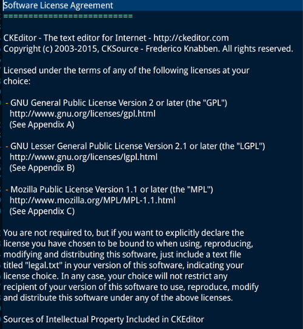

也紀念我們永遠的朋友 李士傑先生（Shih-Chieh Ilya Li）。
Open Source Software license
 We provide Open Source Software license and legal materials via this page.
We provide Open Source Software license and legal materials via this page.
多重自由開源條款授權軟體之條款選擇與授權標示
常接觸自由開源軟體的讀者應該都聽過雙重授權 (dual-licensing) 或多重授權 (multi-licensing) 模式，也就是一個自由開源軟體透過多份不同的條款來授權散布，而軟體的使用者因此可以選擇最貼近自己需求的條款來後續散布這個軟體。這樣的多重授權模式常被應用在商業化利用的自由開源軟體上，最常看到的條款組合模式是以一份 GPL 類條款搭配商業授權條款來釋出，由於 GPL 類條款具有較為嚴格的授權拘束性，衍生程式的源碼必須在散布時也同時提供出來，對於不能履行這項義務的使用者來說，這時候就必須選擇洽談商業授權內容，在給付一定的授權金之後，使用者就可以獲得散布衍生程式無需提供源碼的授權條款。因此在這種「GPL 類+商業條款」的多重授權模式下，使用者通常只需要確認衍生程式源碼是否可以在散布時提供出來，就能決定要採用哪一種授權條款，而在相關產品的授權資訊標示上也因此相對地單純（註一）。不過在多重授權模式中，還有一種的態樣是透過多份自由開源授權條款來散布，在面對這種多重自由開源條款授權的軟體時，使用者條款在選擇條款的考量標準與授權標示上，均與上述「GPL 類+商業條款」的典型略有不同，因此本文將從多重自由開源條款授權的緣由談起，來說明在面對這種軟體時，可以採用什麼樣的基本態度來選擇條款，以及如何適當地標示後續散布的授權聲明內容。
【多重自由開源條款的授權模式注重相容性】
一個軟體會採用多份的自由開源條款來授權，主要的目的是為了增加軟體間相互應用的空間，因為多增加一份條款來授權，就表示多一種授權條件相容通的管道，授權容通管道愈多，法律層面的門檻愈低，對於開發者來說，就愈可以將理解授權條款的時間與心力省下來，投入到技術開發上。
以網頁內容編輯器 CKEditor 為例，其採用 GPL-2.0+、LGPL-2.1+ 與 MPL-1.1+（註二）的三重授權模式，因此使用者可以在這三份條款以及其後的新版本條款中，選擇一份作為散布時的授權條款。這樣的三重授權模式可以讓 CKEditor 相容於許多其他的自由開源軟體：一方面因為 GPL 系列條款是目前最被廣泛採用的自由開源條款，所以透過 GPL-2.0+ 授權，可以讓 CKEditor 相容於 GPL 第二版及之後新版的自由開源軟體；另外一方面，相對於 GPL-2.0 來說，LGPL-2.1 與 MPL-1.1 是二份較寬鬆、具有彈性的授權條款，本身就可以與許多非 GPL 系列的自由開源條款相容，此外，在符合授權規定的條件下，LGPL-2.1 與MPL-1.1 甚至可以與私有軟體 (Proprietry Software) 結合在一起運作，卻同時讓私有軟體保持其程式源碼的封閉性，因此透過 LGPL-2.1+ 與 MPL-1.1+，CKEditor 在條款相容性上又增加了不少空間 ；此外，這個三重授權模式允許使用者可以選擇版本號較新的條款，因此即使未來許多軟體採用新版本的條款授權釋出、而新版本與舊版本條款內容並不相容時，使用者可以為 CKEditor 選擇較新版本的授權條款，因而解決掉新舊版本條款間衝突的問題。綜合來說，這樣的多重授權設計制度，讓 CKEditor 可以廣泛相容於許多自由開源授權條款，包括 BSD、MIT、Apache-2.0、CDDL、EPL、AGPL 等等，以及商業授權條款，大幅度擴展了與其他軟體結合應用的可能性（註三）。

▲ 圖1：CKEditor 在 LICENSE.md 檔案中說明所採用的三份授權條款（註四）。
【擇一遵守與原樣保留的二種授權選擇態度】
在面對多重自由開源條款授權的軟體時，只要使用者明確知道選用哪一份條款是最貼近自己的應用需求時，就可以將其他條款的說明內容刪除，只保留選用條款的授權說明文字與條款全文，這樣的行為代表使用者只需要遵守單一條款的規定，而當使用者將這個版本的軟體散布給其他後手使用時，後手使用者因此也只需要遵守所保留下來的單一授權條款規定即可。以上述 CKEditor 的例子來繼續說明：使用者若為了替客戶客製化一套網站內容管理系統，準備將 CKEditor 與網站內容軟體軟體 Wordpress 結合在一起，由於 Wordpress 是透過 GPL-2.0+ 授權，同時該社群開發團隊強烈認為外掛程式屬於衍生程式，必須也採用 GPL-2.0 來一同授權散布（註五），這時候使用者只要將 LGPL-2.1+ 與 MPL-1.1+ 這兩個授權選項從 CKEditor 的授權內容中剔除，僅保留 GPL-2.0+ 作為後續散布 CKEditor 的授權條款，這樣就可以與 Wordpress 的授權模式一致。
不過除了刪除不適用、保留適用條款的方式之外，CKEditor 還提供了一個獨特而貼心的擇一遵守標示方式：使用者無須刪除任何的資訊，而是在自己散布的版本中加上一個 "legal.txt" 的純文字檔，在其中說明這個散布版本的 CKEditor 是特別採用 GPL-2.0+ 來授權，在這樣的方式之下，這個版本的授權條款仍然是與 Wordpress 相容，使用者也當然必須遵守 GPL-2.0 的授權義務規定，但同時也將原本三重授權模式的資訊傳遞下去，當其他後手使用者取得這個版本的 CKEditor 時，仍然保有繼續從三份授權條款中擇一的彈性空間（註四）。這樣的標示方式相當獨特，不見得可以在其他多重自由開源授權的軟體中看到，因為不同軟體開發社群對於授權標示有不同的立場與態度，因此建議讀者若將要利用多重自由開源條款授權的軟體時，注意一下是否該軟體也有提供這類的便利標示方式，若有的話即可加以應用。
在上述的擇一遵守之外，若是使用者對於授權內容方面並沒有特定的需求，也可以選擇不去更動授權內容，在維持授權聲明內容的原樣狀態下，來散布軟體或是修改過的程式碼。承接上述 CKEditor 的例子：若這位使用者不是為了完成客戶的要求，而僅為了個人興趣來研究、修改與散布 CKEditor，所以這時候對於授權條款的內容並沒有特定的堅持，當在散布 CKEditor 的時候，就可以原樣維持授權相關的內容，讓後手使用者仍然直接保有選擇授權條款的空間。
【結語】
多重自由開源條款授權模式，可以增加軟體間的相互應用空間，間接促進軟體間的結合與改良，這樣的態度在當前軟體程式規模日驅龐大的現狀下，是相當重要的，而採用這種授權模式的開發社群，也大都清楚意識到這種授權條款相容通的重要性。因此當讀者在面對這類多重自由開源授權模式的軟體時，在沒有對於授權條件有特定要求的狀況下，就可以直接原樣保留授權聲明，讓這種多重開放的授權選擇模式儘量延伸出去，將可以保留其他後手使用者在授權選擇上的彈性，跨大自由開源軟體間的交戶應用。
----
註一：進一步關於多重授權模式的商業應用，請參閱：葛冬梅，自由／開放源碼軟體的多重授權，https://www.openfoundry.org/tw/legal-column-list/506-2010-07-15-10-46-02；葛冬梅，MPL 多重授權模式下的 GPL 相容性，https://www.openfoundry.org/tw/legal-column-list/1495-mpl-gpl-。
註二：授權條款與版本號縮寫後的加號 "+" 代表「及其後版本」的意思，以 GPL-2.0+ 為例，這就代表 CKEditor 是透過「GPL 第二版及其後版本」來授權。
註三：關於各自由開源授權條款間的相容性，可以參見：葛冬梅，GPL 與常見授權條款相容性淺析，https://www.openfoundry.org/tw/legal-column-list/9166-compatibility-between-gpl-and-other-common-used-foss-licenses。
註四：本圖是截取自 CKEditor v. 4.4.7. 中的 LICENSE.md 純文字檔，該檔案清楚說明 CKEditor v. 4.4.7. 的三重自由開源授權模式，同時還提供了一份獨特而貼心的 legal.txt 機制。CKEditor v. 4.4.7. 下載網址：https://download.cksource.com/CKEditor/CKEditor/CKEditor%204.4.7/。
註五：Wordpress 的授權說明請見：https://wordpress.org/about/license/。
Address：No.128, Sec.2, Academia Rd., Institute of Information Science, Academia Sinica, Nangang District, Taipei City 11529, Taiwan (R.O.C).
Privacy Policy. Terms-of-use